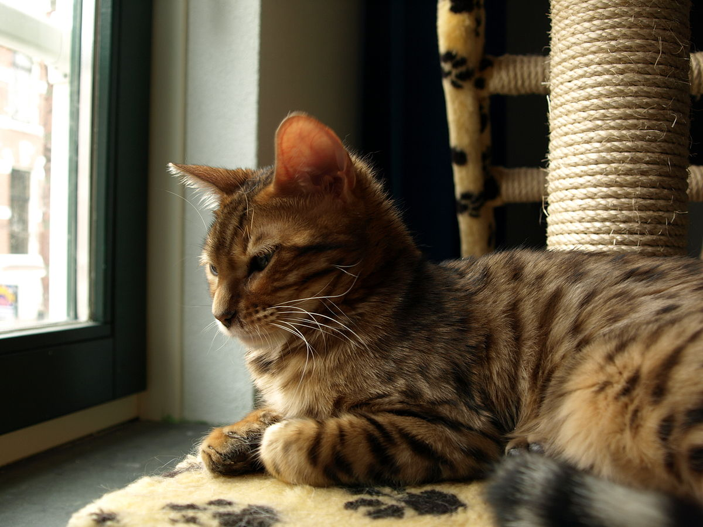

The Bengal Cat is a breed of domestic cat developed by selective breeding to evoke the feline denizens of the jungle such as leopards, ocelots, margays and clouded leopards. Bengal Cats were developed by the selective breeding of domestic cats with hybrids of domestic cats and an Asian leopard cat (ALC), Prionailurus bengalensis, with the goal of creating a confident, healthy and friendly cat with the high contrast and vividly marked coat.[1]
The name "Bengal cat" was derived from the taxonomic name of the Asian leopard cat (P. b. bengalensis). They have a "wild" appearance with large spots, rosettes, and a light/white belly, and a body structure reminiscent of the ALC,[3] but once separated by at least four generations from the original crossing possess a gentle domestic cat temperament.[2]
References:
This article uses material from the Wikipedia article "Bengal", which is released under the Creative Commons Attribution-Share-Alike License 3.0.
Bengal Cat Animal World, Information Resource: Exotic Pets & Animals. Retrieved on: January 18, 2008
Picture: "Panthera" by Cybje - Own work. Licensed under CC BY-SA 3.0 via Wikimedia Commons.
{kind=link}